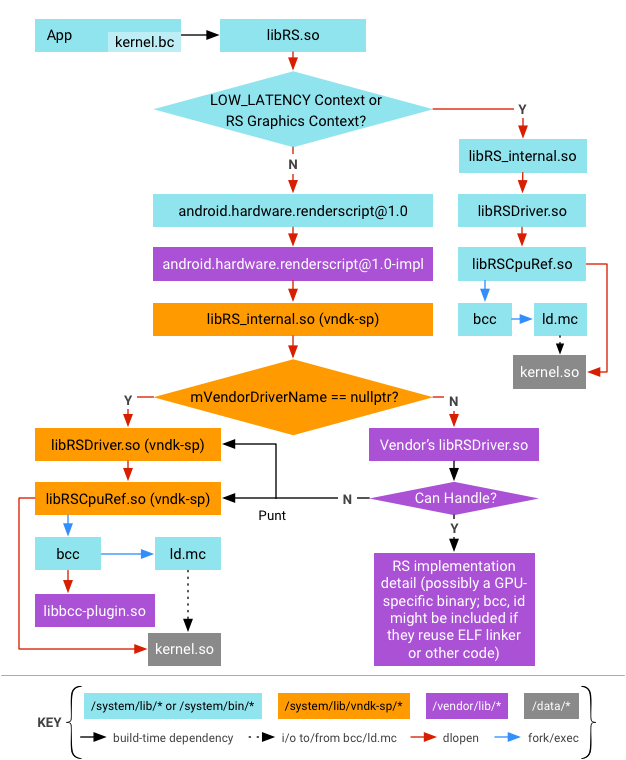
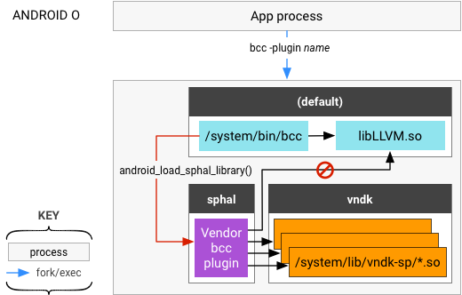
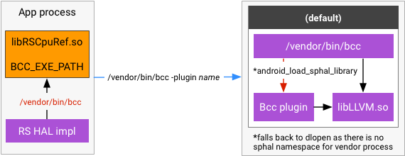

RenderScript is a framework for running computationally intensive tasks at high performance on Android. It is designed for use with data-parallel computation, although serial workloads can benefit as well. The RenderScript runtime parallelizes work across processors available on a device, such as multi-core CPUs and GPUs, enabling developers to focus on expressing algorithms rather than scheduling work. RenderScript is especially useful for applications performing image processing, computational photography, or computer vision.
Devices running Android 8.0 and higher use the following RenderScript framework and vendor HALs:
Differences from RenderScript in Android 7.x and lower include:
- Two instances of RenderScript internal libs in a process. One set is for
CPU fallback path and is from directly at
/system/lib; the other set is for GPU path and is from/system/lib/vndk-sp. - RS internal libs in
/system/libare built as part of the platform and are updated assystem.imgis upgraded. However, libs in/system/lib/vndk-spare built for the vendor and are not updated whensystem.imgis upgraded (while they can be updated for a security fix, their ABI remains the same). - Vendor code (RS HAL, RS driver, and the
bcc plugin) are linked against the RenderScript internal libs located at/system/lib/vndk-sp. They cannot link against libs in/system/libbecause libs in that directory are built for the platform and thus may not be compatible with the vendor code (i.e., symbols may be removed). Doing so would make a framework-only OTA impossible.
For more details, see Renderscript on developer.android.com.
Design
The following sections detail RenderScript design in Android 8.0 and higher.
RenderScript libs available to vendors
This section lists the RenderScript libs (known as Vendor NDK for Same-Process HALs or VNDK-SP) that are available to vendor code and which can be linked against. It also details additional libraries that are unrelated to RenderScript but which are also provided to vendor code.
While the following list of libraries might differ between Android releases,
it is immutable for a specific Android release; for an up-to-date list of
available libraries, refer to /system/etc/ld.config.txt.
| RenderScript Libs | Non-RenderScript Libs |
|---|---|
|
|
Linker namespace configuration
The linking restriction that prevents libs not in VNDK-SP from being used by vendor code is enforced at runtime using the linker namespace. (For details, refer to the VNDK Design presentation.)
On a device running Android 8.0 and higher, all Same-Process HALs (SP-HALs)
except RenderScript are loaded inside the linker namespace
sphal. RenderScript is loaded into the RenderScript-specific
namespace rs, a location that enables a slightly looser
enforcement for RenderScript libs. Because the RS implementation needs to load
the compiled bitcode, /data/*/*.so is added to the path of the
rs namespace (other SP-HALs are not allowed to load libs from the
data partition).
In addition, the rs namespace allows more libs than provided for
by other namespaces. libmediandk.so and libft2.so
are exposed to the rs namespace because
libRS_internal.so has an internal dependency to these libraries.
Loading drivers
CPU fallback path
Depending on the existence of the RS_CONTEXT_LOW_LATENCY bit
when creating an RS context, either the CPU or GPU path is selected. When the
CPU path is selected, libRS_internal.so (the main implementation
of the RS framework) is directly dlopened from the default linker
namespace where the platform version of RS libs are provided.
The RS HAL implementation from the vendor is not used at all when the CPU
fallback path is taken, and an RsContext object is created with
null mVendorDriverName. libRSDriver.so is (by
default) dlopened and the driver lib is loaded from the
default namespace because the caller
(libRS_internal.so) is also loaded in the default
namespace.
GPU path
For the GPU path, the libRS_internal.so is loaded differently.
First, libRS.so uses
android.hardware.renderscript@1.0.so (and its underlying
libhidltransport.so) to load
android.hardware.renderscript@1.0-impl.so (a vendor
implementation of RS HAL) into a different linker namespace called
sphal. The RS
HAL then dlopens libRS_internal.so in a another
linker namespace called rs.
Vendors can provide their own RS driver by setting the build time flag
OVERRIDE_RS_DRIVER, which is embedded into the RS HAL
implementation
(hardware/interfaces/renderscript/1.0/default/Context.cpp). This
driver name is then dlopened for the RS context for the GPU path.
The creation of the RsContext object is delegated to the RS HAL
implementation. The HAL calls back to the RS framework using
rsContextCreateVendor() function with the name of the driver to
use as an argument. The RS framework then loads the specified driver when the
RsContext is initialized. In this case, the driver library is
loaded into the rs namespace because the RsContext
object is created inside the rs namespace and
/vendor/lib is in the search path of the namespace.
When transitioning from the default namespace to the
sphal namespace, libhidltransport.so uses the
android_load_sphal_library() function to explicitly order the
dynamic linker to load the -impl.so library from the
sphal namespace.
When transitioning from the sphal namespace to the
rs namespace, loading is done indirectly by the following line in
/system/etc/ld.config.txt:
namespace.sphal.link.rs.shared_libs = libRS_internal.so
This line specifies the dynamic linker should load
libRS_internal.so from the rs namespace when the lib
can't be found/loaded from the sphal namespace (which is always
the case because sphal namespace does not search
/system/lib/vndk-sp where libRS_internal.so
resides). With this configuration, a simple dlopen() call to
libRS_internal.so is enough to make the namespace transition.
Loading bcc plugin
bcc plugin is a vendor-provided library loaded into the
bcc compiler. Because bcc is a system process in the
/system/bin directory, the bcc plugin library can be
considered an SP-HAL (i.e., a vendor HAL that can be directly loaded into the
system process without being binderized). As an SP-HAL, the
bcc-plugin library:
- Cannot link against framework-only libraries such as
libLLVM.so. - Can link against only the VNDK-SP libraries available to the vendor.
This restriction is enforced by loading the bcc plugin into the
sphal namespace using the
android_sphal_load_library() function. In previous versions of
Android, the plugin name was specified using the -load option and
the lib was loaded using the simple dlopen() by
libLLVM.so. In Android 8.0 and higher, this is specified in the
-plugin option and the lib is directly loaded by the
bcc itself. This option enables a non-Android-specific path to
the open source LLVM project.

Search paths for ld.mc
When executing ld.mc, some RS runtime libs are given as inputs
to the linker. The RS bitcode from the app is linked against the runtime libs
and when the converted bitcode is loaded into an app process, the runtime libs
are again dynamically linked from the converted bitcode.
Runtime libs include:
libcompiler_rt.solibm.solibc.so- RS driver (either
libRSDriver.soorOVERRIDE_RS_DRIVER)
When loading the compiled bitcode into the app process, provide the exact same
library that was used by ld.mc. Otherwise, the compiled bitcode
may not find a symbol which was available when it was linked.
To do so, RS framework uses different search paths for the runtime libs when
executing ld.mc, depending on whether the RS framework itself is
loaded from /system/lib or from /system/lib/vndk-sp.
This can be determined by reading the address of an arbitrary symbol of a RS
framework lib and using dladdr() to get the file path mapped to
the address.
SELinux policy
As a result of the SELinux policy changes in Android 8.0 and higher, you must
follow specific rules (enforced through neverallows) when
labelling additional files in vendor partition:
vendor_filemust be the default label in for all files invendorpartition. The platform policy requires this to access passthrough HAL implementations.- All new
exec_typesadded invendorpartition through vendor SEPolicy must havevendor_file_typeattribute. This is enforced throughneverallows. - To avoid conflicts with future platform/framework updates, avoid labelling
files other than
exec_typesinvendorpartition. - All library dependencies for AOSP-identified same process HALs must be
labelled as
same_process_hal_file.
For details on SELinux policy, see Security-Enhanced Linux in Android.
ABI compatibility for bitcode
If no new APIs are added, which means no HAL version bump, the RS frameworks will keep using the existing GPU (HAL 1.0) driver.
For minor HAL changes (HAL 1.1) not affecting bitcode, the frameworks should fallback to CPU for these newly added APIs and keep using GPU (HAL 1.0) driver elsewhere.
For major HAL changes (HAL 2.0) affecting bitcode compilation/linking, RS frameworks should choose not to load vendor-provided GPU drivers and instead use the CPU or Vulkan path for acceleration.
Consuming RenderScript bitcode occurs in three stages:
| Stage | Details |
|---|---|
| Compile |
|
| Link |
|
| Load |
|
In addition to the HAL, runtime APIs and the exported symbols are also interfaces. Neither interface has changed since Android 7.0 (API 24) and there are no immediate plans to change it in Android 8.0 and beyond. However, if the interface does change, the HAL version will also increment.
Vendor implementations
Android 8.0 and higher requires some GPU driver changes for the GPU driver to work correctly.
Driver modules
- Driver modules must not depend on any system libraries that are not in the list.
- Driver must provide its own
android.hardware.renderscript@1.0-impl_{NAME}, or declare the default implementationandroid.hardware.renderscript@1.0-implas its dependency. - CPU implementation
libRSDriver.sois a good example of how to remove non-VNDK-SP dependencies.
Bitcode compiler
You can compile RenderScript bitcode for the vendor driver in two ways:
- Invoke vendor-specific RenderScript compiler in
/vendor/bin/(preferred method of GPU compilation). Similar to other driver modules, the vendor compiler binary cannot depend on any system library that is not in the list of RenderScript libs available to vendors. - Invoke system bcc:
/system/bin/bccwith a vendor-providedbcc plugin; this plugin cannot depend on any system library that is not in the list of RenderScript libs available to vendors.
If the vendor bcc plugin needs to interfere with the CPU
compilation and its dependency on libLLVM.so cannot be easily
removed, the vendor should copy bcc (and all the non-LL-NDK
dependencies, including libLLVM.so, libbcc.so) into
/vendor partition.
In addition, vendors need to make the following changes:
- Copy
libclcore.bcto/vendorpartition. This ensureslibclcore.bc,libLLVM.so, andlibbcc.soare in sync. - Change the path to the
bccexecutable by settingRsdCpuScriptImpl::BCC_EXE_PATHfrom the RS HAL implementation.
SELinux policy
SELinux policy affects both the driver and the compiler executables. All
driver modules must be labeled same_process_hal_file in the
device's file_contexts. For example:
/vendor/lib(64)?/libRSDriver_EXAMPLE\.so u:object_r:same_process_hal_file:s0
The compiler executable must be able to be invoked by an app process, as does
the vendor copy of bcc (/vendor/bin/bcc). For example:
device/vendor_foo/device_bar/sepolicy/file_contexts: /vendor/bin/bcc u:object_r:same_process_hal_file:s0
Legacy devices
Legacy devices are those that satisfy the following conditions:
- PRODUCT_SHIPPING_API_LEVEL is lower than 26.
- PRODUCT_FULL_TREBLE_OVERRIDE is not defined.
For legacy devices, the restrictions are not enforced when upgrading to
Android 8.0 and higher, meaning the drivers can continue to link to libraries
in /system/lib[64]. However, because of the architecture change
related to OVERRIDE_RS_DRIVER,
android.hardware.renderscript@1.0-impl must be installed to
/vendor partition; failing to do so forces RenderScript runtime
fallback to CPU path.